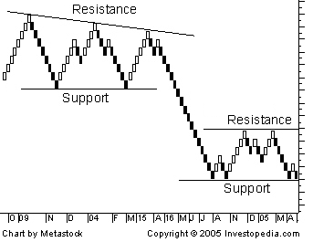

A type of chart, developed by the Japanese, that is only concerned with price movement; time and volume are not included. It is thought to be named for the Japanese word for bricks, "renga". A renko chart is constructed by placing a brick in the next column once the price surpasses the top or bottom of the previous brick by a predefined amount. White bricks are used when the direction of the trend is up, while black bricks are used when the trend is down. This type of chart is very effective for traders to identify key support/resistance levels. Transaction signals are generated when the direction of the trend changes and the bricks alternate colors.
 For example, a trader will sell an underlying asset when a black brick is placed at the end of series of climbing white bricks. Since this type of chart was designed as a way to follow the general price trend of an asset, there can often be false signals where the color of the bricks changes too early, producing a whip-saw effect.
{kind=link}